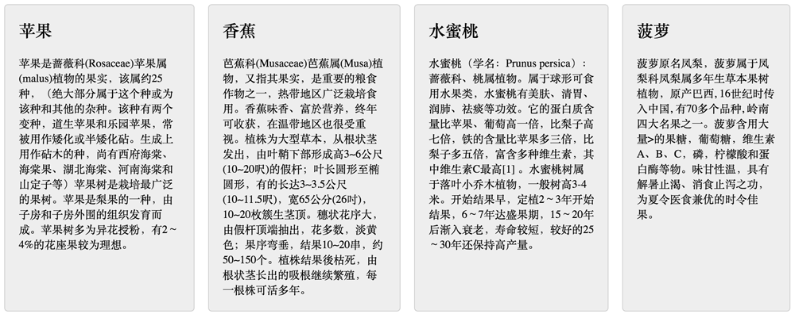
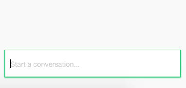

借用Effective之名，开始写Effective系列，总结一些前端的心得。
借用Effective之名，开始写Effective系列，总结一些前端的心得。
为什么说能使用html/css解决的问题就不要使用JS呢？两个字，因为简单。简单就意味着更快的开发速度，更小的维护成本，同时往往具有更好的体验，下面介绍几个实例。
1. 导航高亮
导航高亮是一种很常见的问题，包括当前页面的导航在菜单里面高亮和hover时高亮。你可以用js控制，但是用一点CSS技巧就可以达到这个目的，不需要使用JS。
在正常态时，每个导航的默认样式为：
当前页面的导航透明度为1. 为了实现这个目的：
首先通过body给不同的页面添加不同的类，用来标志不同的页面
所有的li也用class标志，为了有一个一一对应的关系：
然后就可以设置当前页面的样式，覆盖掉默认的样式：
这样子，如果当前页面是home，则body.home na li.home这条规则生效，home的导航将高亮
这个技艺在《精通CSS》这种书里面有提及。如果你用js控制，那么在脚本加载好之前，当前页面是不会高亮的，而脚本加载好之后突然就高亮了。所以用js吃力不讨好。
hover时的高亮，可以用css的:hover选择器：
加上:hover选择器的优先级将会高于原本的，鼠标hover的时候将会覆盖默认样式，即高亮。
你也可以用mouse事件，mouseover的时候添加一个类，mouseleave的时候移除掉这个类，这样就变复杂了，用CSS甚至可以兼容不支持JS的浏览器，用户可能把浏览器的js禁掉了。我一个纯展示的静态页面，为啥要写js呢，是吧。
注意这个hover选择器特别好用，几乎适用于所有需要用鼠标悬浮时显示的场景。
2. 鼠标悬浮时显示
鼠标悬浮的场景十分常见，例如导航的菜单：

以及在《Google地图开发总结》一文提到的，marker详情框的显示：

一般要把隐藏的东西如菜单作为hover目标的子元素或者相邻元素，才方便用css控制，例如上面的菜单，是把menu当作导航的一个相邻元素：
menu在正常态下是隐藏的：
而当导航hover时显示：
注意这里使用了一个相邻选择器，这也是上面说的为什么要写成相邻的元素。menu的位置可以用absolute定位。
同时menu自已本身hover的时候也要显示，否则鼠标一离开导航的时候，菜单就消失了：
这里会有一个小问题，即menu和导航需要挨着一起，否则中间有空隙的话，上面添加的菜单hover就不能发挥作用了，但是实际情况下从美观的角度，两者是要有点距离的。这个其实也好解决，只要在menu上面再画一个透明的区域就好了，如下蓝色的方块：

可以用before/after伪类用absoute定位实现：
如果我既写了css的hover，又监听了mouse事件，用mouse控制显示隐藏，双重效果会有什么情况发生，如果按正常套路，在mouse事件里面hover的时候，添加了一个display: block的style，会覆盖掉CSS的设置。也就是说，只要hover一次，css的代码就不管用了，因为内联样式的优先级会高于外链的。但是实际情况下会有意外发生，那就是在移动端iphone上面，触摸会触发CSS的hover，并且这个的触发会很高概率地先于touchstart事件，在这个事件里面会判断当前是显示还是隐藏的状态，由于css的hover发挥了作用，所以判断为显示，然后又把它隐藏了。也就是说，点一次不出来，要点两次。所以最好别两个同时写。
第二种场景，使用子元素，这个更简单。把hover的目标和隐藏的对象当作同一个父容器的子元素，然后hover写在这个父容器上面就可以了，不用像上面那样，隐藏元素也要写个hover：
3. 自定义radio/checkbox的样式
我们知道，使用原生的radio/checkbox是不可以改变它的样式的，得自己用div/span去画，然后再去监听点击事件。但是这样需要自己去写逻辑控制，例如radio只能选一个的功能，另一个是没有办法使用change事件。就是没有用原生的方便。
但是实际上可以用一点CSS3的技巧实现自定义的目的，如下，就是用原生实现的radio：
这个主要是借助了CSS3提供的一个伪类:checkd，只要radio/checkbox是选中状态，这个伪类就会生效，因此可以利用选中和非选中的这两种状态，去切换不同的样式。如下把一个checkbox和一个用来自定义样式的span写在一个label里面，checkbox始终隐藏：
写在label里面是为了能够点击span的时候改变checkbox的状态，然后再改一下选中态的样式即可：
关键在于这一步，添加一个打勾的背景图也好，使用图标字体也好。
:checked兼容性还是比较好的，只要你不用兼容IE8就可以使用，或者说只要你可以用nth-of-type，就可以用:checked
4. 多列等高
多列等高的问题是这样的，排成一行的几列由于内容长短不一致，导致容器的高度不一致：

你可以用js算一下，以最高的一列的高度去设置所有列的高度，然而这个会造成页面闪动，刚开始打开页面的时候高度不一致，然后发现突然又对齐了。这个解决办法主要有两种：
第一种是每列来一个很大的padding，再来一个很大的负的margin值矫正回去，就对齐了，如下：
效果如下：
你会发现，这个对齐是对齐了，但是底部的border没有了，设置的圆角也不起作用了，究其原因，是因为设置了一个很大的padding值，导致它的高度变得很大，如上图所示。所以如果你想在底部absolute定位放一个链接”更多>>”也是实现不了了。
第二种办法是借助table的自适应特性 ，每个div都是一个td，td肯定是等高的，html结构不变，CSS改一下：
对齐效果如下：

这样还有一个好处，就是在响应式开发的时候，可以借助媒体查询动态地改变display的属性，从而改它排列的方式。例如在小于500px时，每一列占满一行，那么只要把display: table-cell覆盖掉就好了：
效果如下所示：
如果在pad 1024px的设备上，希望一行显示2个，那应该怎么办呢？由于上面用的td，必定会排在同一行。其实可以在第二个和第三个中间加一个tr，让它换行：
在大屏和小屏时，tr是不显示的，而在中屏时，tr显示：
就能够实现在小屏时一行排两列了，只是这个有个小问题，就是在中屏拉到大屏的时候tr的dipslay: none已经没有什么作用，因为table的布局已经计算好。但是一般应该不用考虑这种拉伸范围很大的情况，正常刷新页面是可以的，如果真要解决那得借助下js
5.需要根据个数显示不同样式
例如说可能有1~3个item显示在同一行，而item的个数不一定，如果1个，那这个item占宽100%，2个时每一个50%，3个时每一个33%，这个你也可以用js计算一下，但是用CSS3就可以解决这个问题：
第5行的意思就是选择li的第一个元素，并且它是倒数第二个元素，第6行的意思是选择前面有是第一个且是倒数第二个li的所有li，第一行是选择了第一个，第二行选择除第一个外的其它所有元素。有三个元素的类似。
6. 使用表单提交
提交请求有两种方式，一种是ajax，另外一种是表单提交。很多人都知道ajax，但往往忽略了还有个form提交。
假设在首页有一个搜索的表单，点击search的时候就跳到列表页
你可以一个个去获取所有的input的值，然后把它拼到网址参数重定向一下，但是其实可以不用这样，用一个表单提交就好了：
将所有字段的名字写在input的name里面，然后form的action为搜索页的链接。这样子不用一行js代码就能够搜索跳转。
如果你需要做表单验证，那就监听submit事件，然后做验证，验证通过则调一下原生的submit就可以提交了，也是不需要手动去获取form的值
7.自动监听回车事件
这个的场景是希望按回车的时候能够触发请求，像第6点，按回车实现跳转，或者是像下面的，按下回车就送一条聊天消息：

通常的做法是监听下keypress事件，然后检查一下keycode是不是回车，如果是则发请求。
但是其实有个特别简单的办法，也是不需要一行JS，那就是把表单写在一个form里面，按回车会自动触发submit事件。读者可以自己试试。这个就启示我们要用语义的html组织，而不是全部都用div。如果用相应的html标签，浏览器会自动做一些优化，特别是表单提交的input。
8.巧用CSS3伪类
CSS3的伪类提供了状态切换，除了第3点提到的checked之外，还有其它几个很好用的，例如:focus、:invalid等
1. 例如下面的效果：focus的时候把左边的放大镜颜色加深：
借用:focus实现：
2. 再如，如果用户输入不合法，则下一步是半透明不可点的状态：

实现这一步可以用html5的input和css3的:invalid
通过input的type和pattern属性约束合法性，然后触发:invalid
JS是万能的，几乎可以做任何事情，但是有时候会显得十分笨拙，在js/html/css三者间灵活地切换，往往会极大地简化开发，没有谁是最好的语言，只有适不适合。只要用得好，不管黑猫白猫，都是好猫。
扩展阅读：
- Effective前端1：能使用html/css解决的问题就不要使用JS
- Effective前端2：优化html标签
- Effective前端3：用CSS画一个三角形
- Effective前端4：尽可能地使用伪元素
- Effective前端5：减少前端代码耦合